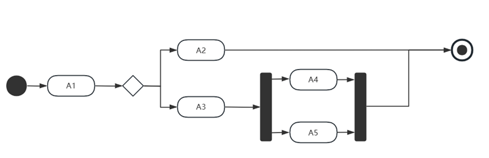
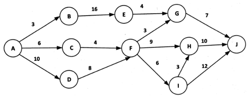
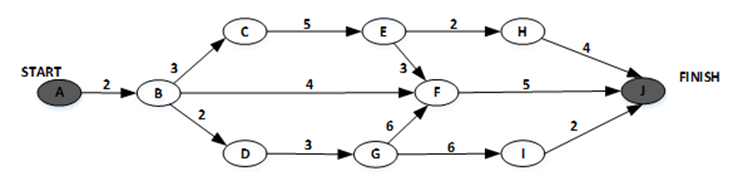

活动图
Activity Diagram
控制流和数据流并存
描述行为的
动作
关键路径
耗时最长的路径
松弛时间
关键路径 - 当前路径耗时最长的路径
关键路径上所有的活动的松弛时间是0
活动A1之后，可能的活动序列为（）。
A2、A3、A4和A5
A3、A4和A5或A2、A4和A5
A2、A4和A5
A2或A3、A4和A5

A2和A3几个是两条不同的路
某软件项目的活动图如下图所示，其中顶点表示项目里程碑，连接顶点的边表示包含的活动，边上的数字表示活动的持续时间(天)，则完成该项目的最少时间为（ ）天。活动F-G的松弛时间为（ ）天。

关键路径 = ADFHJ = 37天
FG所在路径 = ADFGJ = 28天，其松弛时间 = 37 - 28 = 9天
某软件项目的活动图如下图所示，其中顶点表示项目里程碑，连接顶点的边表示包含的活动，边上的数字表示活动的持续时间(天)。活动E-H 最多可以晚开始（ ）天而不影响项目的进度。由于某种原因，现在需要同一个工作人员完成 BC和BD，则完成该项目的最少时间为（ ）天。

关键路径有两条 = ABDGFJ = ABCEFJ = 18天
EH所在路径 = 16，所以可以晚 18 - 16 = 2天
先完成BC再完BD，总时间 = 3 + 18 = 21天
先完成BD再完BC，总时间 = 2 + 18 = 20天
∴ 最少时间 20 天